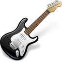
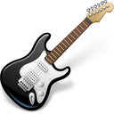

Filosofia
Aprender*
* tenho uma busca insaciável pelo conhecimentoConhecimentos

 


Foco Big Dedicação
sempre sonho alto mas com os pés no chão e passo a passo...
Seja reposicionando, revirando ou voltando atrás prefiro ser essa metamorfose ambulante
meu único limite sou eu mesmo
nogsantos.com.br
envie uma mensagem
mais uma coisa...
Desenvolvimento de sistemas para web php, java?
* estou a disposição para conversarmos =]